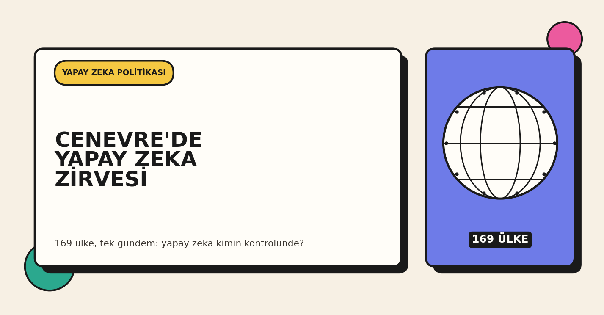
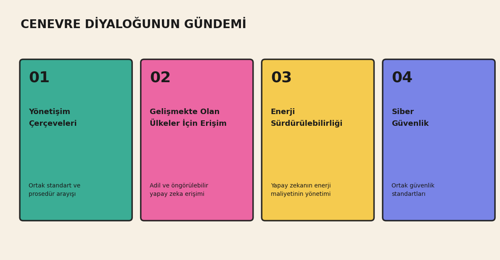

BM, Yapay Zeka Yönetişimi İçin Cenevre'de Toplandı
169 ülkenin katıldığı iki günlük diyalogda neler konuşuluyor

Ne oldu
Bugün Cenevre'de Birleşmiş Milletler'in ilk "Global Dialogue on AI Governance" toplantısı başladı. 169 ülkeden temsilci katılıyor, toplantı yarına kadar sürecek. Toplantı, BM Genel Kurulu'nun bir kararıyla resmen kuruldu ve ITU, UNESCO ile BM Dijital ve Yeni Teknolojiler Ofisi tarafından birlikte yürütülüyor. Ortak başkanlığını El Salvador'dan Egriselda López ve Estonya'dan Rein Tammsaar yapıyor.
Toplantının gündemi dört ana başlıktan oluşuyor: yapay zeka yönetişim çerçeveleri, gelişmekte olan ülkeler için yapay zeka erişimi, yapay zeka ve enerji sürdürülebilirliği, yapay zeka ve siber güvenlik. Yarın Cenevre'de ITU AI for Good Zirvesi başlayacak, 8 Temmuz'da da yeni kurulan BM AI for Good Komisyonu ilk toplantısını yapacak. Komisyonda Nvidia'dan Jensen Huang, Amazon'dan Andy Jassy, Microsoft'tan Brad Smith ve Anthropic'ten Jack Clark gibi isimler de yer alıyor.

Neden önemli
Toplantının amacı bağlayıcı bir antlaşma imzalamak değil, katılımcı ülkelerin ortak bir kelime dağarcığı ve asgari prosedürel standartlar üzerinde anlaşmasını sağlamak. Farklı ülkelerin yapay zeka erişimi ve düzenlemesi konusunda farklı öncelikleri var; bu toplantı, o farklı öncelikleri aynı masada tartışmak için kuruldu. Konuyu güncel yapan gelişmelerden biri, geçtiğimiz ay bir yapay zeka modelinin ihracat kontrolleri kapsamında geçici olarak küresel erişime kapatılmış olması; bu olay, erişim güvencesi ve öngörülebilirlik konusunu uluslararası gündeme taşıdı.
Türkiye'deki geliştirici için ne anlama geliyor
Türkiye'de yapay zeka ürünü geliştiren ekiplerin büyük kısmı, altyapısının önemli bir bölümünü yurt dışı kaynaklı frontier modeller (GPT, Claude, Gemini ailesi gibi) üzerine kuruyor. Cenevre'deki tartışmalar, bu tür modellere erişimin uzun vadede nasıl düzenleneceğine dair henüz netleşmemiş bir alan olduğunu gösteriyor. Bu da erişim planlamasında esneklik ve alternatif seçeneklerin (yerel çalıştırılabilen açık kaynak modeller gibi) neden değerlendirilmeye değer olduğunu ortaya koyuyor.
Benim yorumum
Qwen3.5 ailesiyle yaptığımız fine-tuning deneyinde, dışarıdan gelen tek bir modele bağımlı olmak yerine kendi kontrolünüzde çalışan bir alternatifin olmasının pratik esneklik sağladığını görmüştük. O deneyde konu maliyet ve donanımdı. Cenevre'deki tartışmalar ise erişim planlamasının sadece teknik değil, aynı zamanda uluslararası düzenleme boyutu da olduğunu gösteriyor. Bu yüzden yerel ve açık kaynak model yeteneği kurmayı, teknik bir tercihin ötesinde bir güvence unsuru olarak değerlendiriyorum.